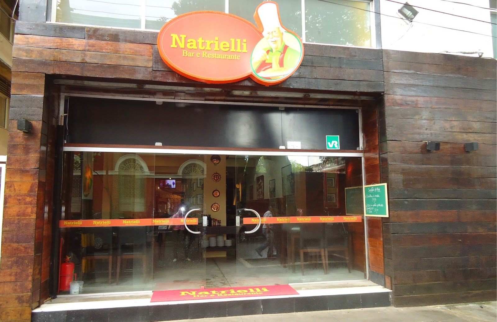

Telefone:
(31) 8888-8888 ou (31) 3456-6543
E-mail:
franguinhonapanela@gmail.com.br
Site:
www.franguinhonapanela.com.br
Restaurante Franguinho na Panela, Belo Horizonte, Minas Gerais, Brasil.
Uma apreciadora da comida e do jeitinho mineiro, escolheu o ditado popular “a pressa é inimiga da perfeição” como lema de seu restaurante. Aqui a comida é feita na hora e, por vezes, colhida da horta com mais de 60 itens cultivados no quintal do restaurante. Se isso toma tempo, também garante o frescor dos ingredientes, que chegam à mesa bonitos e vistosos. Os pratos são fruto da criatividade da equipe da cozinha, sempre com muitos ingredientes e temperos mineiros. Divertida e saborosa, a “Misturinha Chocante” tem filé de frango grelhado, arroz, lâminas de amêndoas douradas, couve e ovos de codorna servidos em uma frigideirinha. Vale também experimentar o “Viradinho da cozinheira”: arroz, couve, bacon, ovo, cebola, feijão, carne serenada e pinhole.